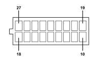

M001H BODY COMPUTER (DASHBOARD)
- Path
- Electrical equipment > 3 CONNECTORS > M INTERMITTENT AND TIMED ELECTRONIC DEVICES > M001 BODY COMPUTER > M001H BODY COMPUTER (DASHBOARD)
- Kind
- connector pinout (pin -> wire colour -> other end)
- Applies to
- all engines; all production periods; only with equipment: Right hand drive
- Interactive page
- https://sloeber94.github.io/elrnDB-fPnd/en/#/169003409
Applies to: all engines; all production periods; only with equipment: Right hand drive

Wiring | Colour |
|---|---|
NERO (black) |
Pin | Cable | Destination | |||
|---|---|---|---|---|---|
Sec.. | Colour | Node | Connect. | Pin | |
10 | 0,35 | BN (white with black stripe) | 2 | ||
11 | 0,35 | NS (black with pink stripe) | 6 | ||
12 | 0,35 | AZ (light blue with violet stripe) | 9 | ||
13 | 0,35 | RV (red with green stripe) | 8 | ||
14 | 0,35 | AB (light blue with white stripe) | 2 | ||
15 | 0,35 | LN (blue with black stripe) | 2 | ||
17 | 0,35 | NV (black with green stripe) | 5 | ||
18 | 0,5 | RN (red with black stripe) | 8 | ||
19 | 0,35 | AN (light blue with black stripe) | 1 | ||
20 | 0,35 | BS (white with pink stripe) | 14 | ||
21 | 0,35 | HN (grey with black stripe) | 5 | ||
22 | 0,5 | BR (white with red stripe) | 7 | ||
23 | 0,35 | MV (brown with green stripe) | 5 | ||
24 | 0,35 | AG (light blue with yellow stripe) | 1 | ||
25 | 0,35 | HR (grey with red stripe) | 1 | ||
26 | 0,35 | AH (light blue with grey stripe) | 14 | ||
Topics linked from this page (9)
- 20 FACIA
- D030A DRIVER'S FRONT DOOR COUPLING (DASHBOARD)
- D031A PASSENGER FRONT DOOR COUPLING (DASHBOARD)
- D110 CLOCK SPRING AND STEERING WHEEL CONTROLS COUPLING
- H042 DRIVER'S FRONT ELECTRIC WINDOW SWITCH
- H043 PASSENGER'S FRONT ELECTRIC WINDOW SWITCH
- H090B SWITCH CONTROL PANEL (DASHBOARD)
- P091 AERIAL FOR FIAT-CODE
- R010 MULTIPLE TESTER CONNECTION
Topics that link to this page (13)
- D030A DRIVER'S FRONT DOOR COUPLING (DASHBOARD)
- D030A DRIVER'S FRONT DOOR COUPLING (DASHBOARD)
- D031A PASSENGER FRONT DOOR COUPLING (DASHBOARD)
- D031A PASSENGER FRONT DOOR COUPLING (DASHBOARD)
- D110 CLOCK SPRING AND STEERING WHEEL CONTROLS COUPLING (DASHBOARD)
- H042 DRIVER'S FRONT ELECTRIC WINDOW SWITCH (DASHBOARD)
- H042 DRIVER'S FRONT ELECTRIC WINDOW SWITCH (DASHBOARD)
- H043 PASSENGER'S FRONT ELECTRIC WINDOW SWITCH (DASHBOARD)
- H043 PASSENGER'S FRONT ELECTRIC WINDOW SWITCH (DASHBOARD)
- H090B SWITCH CONTROL PANEL (DASHBOARD)
- H090B SWITCH CONTROL PANEL (DASHBOARD)
- P091 AERIAL FOR FIAT-CODE (DASHBOARD)
- R010 MULTIPLE TESTER CONNECTION (DASHBOARD)